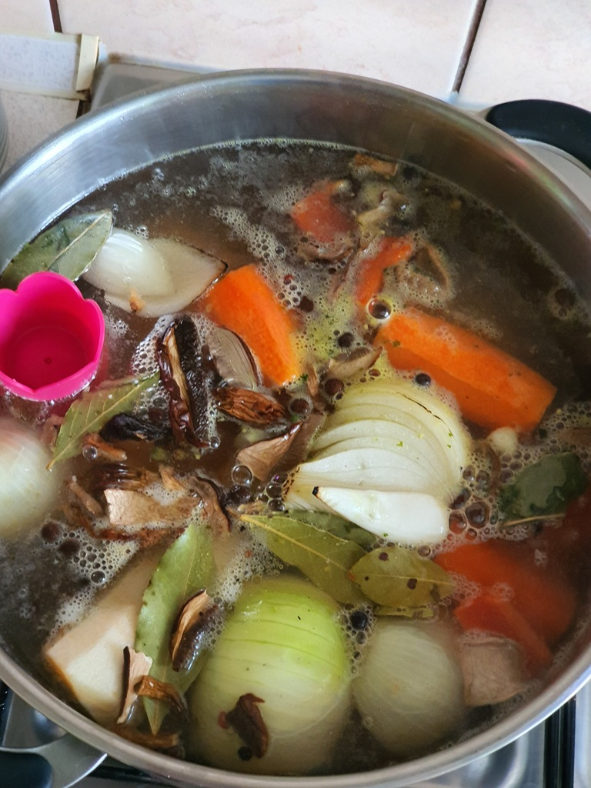
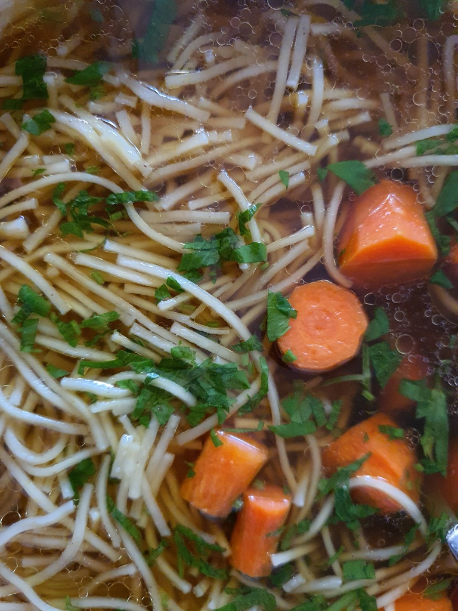

Skład:
- mięso (według uznania drób, wieprzowina, wołowe - najlepiej więcej niż jeden rodziaj);
- marchew;
- korzeń pietruszki;
- papryka;
- cebula;
- grzyby leśne suszone;
- przyprawy (liść laurowy, ziele angielskie, pieprz w całości, zioła wszelakie z lubczykiem na czele, sól);
Przygotowanie:
W pierwszej kolejnośći obrać, umyć i wrzucić do garnka warzywa. Dołorzyć do tego mięso. Dodać przyprawy bez ziół oraz grzyby. Gotować na pełnym ogniu do momentu wrzenia. Następnie zmiejszyć moc palnika na możliwie minimalną tak żeby zupa delikatnie się gotowała. W najlepszym wypadku gotować jak najdłużej się da.
Zdjęcia:
 